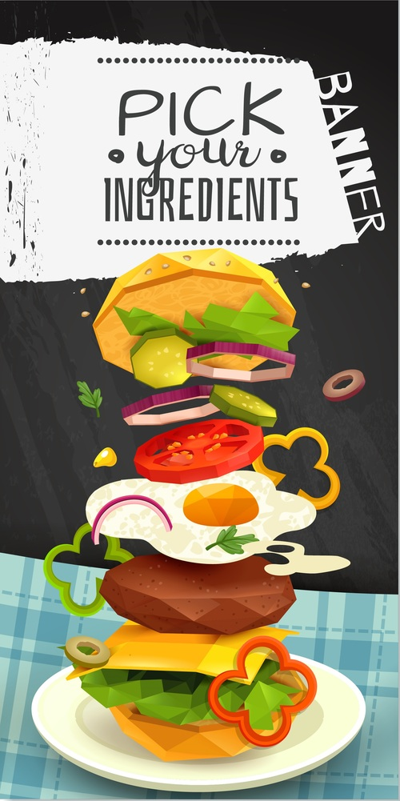

Recetas
Aca vas a tener toda la info , para hacerte tus propias burgers
Hacer un buen Blend, una salsa unica, unos pancitos esponjosos...
Nada de eso es imposibe, asi que robale los ingredientes a tu mama/novia/abuela/etc
Y arranquemos!
Salsa Bigmac
Los ingredientes a usar son
- 2 tazas de mayonesa(tu favorita)
- 1 taza de mostaza
- 1 taza de relish de pepinillos
- 30 g. (2 cucharadas) de pimentón dulce
- 15 g. (una cucharada) de cebolla en polvo
- 15 g. (una cucharada) de ajo en polvo
- 15 ml. (una cucharada) de vinagre blanco
Pasos a seguir
- Mezclamos la mayonesa con la mostaza y el relish de pepinillos. Mezclamos bien hasta integrar los tres ingredientes.
- Añadimos el pimentón dulce, la cebolla en polvo, el ajo en polvo y el vinagre. Removemos de nuevo con energía hasta conseguir una mezcla homogénea.
- Guardamos la mezcla en un tarro o botella de cristal con tapa y guardamos en el frigorífico hasta el momento de consumir.

Pan de Papa
Los ingredientes a usar son
- 150 cc de leche
- 30 g azúcar
- 40 g levadura seca
- 450 g harina 000
- 10 g sal
- 2 huevos frescos
- 2 papas hervidas chicas y hechas puré rústico
- 50 g de manteca (o 30 ml de aceite neutro)
Pasos a seguir
- Herví las papas con piel. Una vez cocidas pelarlas y hacer un puré rústico. Reservar.
- En un recipiente mezclá la leche tibia con la levadura fresca y el azúcar hasta disolver y que empiece a trabajar la levadura. Reservá.
- En un bol mezclá la harina, la sal y agregá la leche con la levadura. Sumá los huevos y mezclá todo con la mano o con batidora. Cuando se arma pegote, agregá el puré de papa frío o tibio (¡no caliente!), porque te va a resultar más fácil. Una vez que más o menos esté unido, bajalo a la mesada y amasá hasta que quede una masa lisa. Enseguida toma cuerpo, pero es húmeda, pegote. No sufras, no le agregues harina. Vos amasá y dale golpes contra la mesada: en cuanto se desarrolle el gluten se formará el bollo.
- Recién entonces agregá la manteca pomada. Ponela en el medio de la masa y seguí amasando para que se distribuya bien. Se te van a pegar los dedos, sí. Ayudate con una espátula ancha, para levantar la masa. ¡No agregues harina! En unos 10 a 15 minutos de amasado, está.
- Cubrí el bollo y dejalo descansar un rato.
- Para hacer panes para hamburguesas, lo mejor es darle forma con un molde. Si no tenés molde, cero drama: armá cinturas con papel aluminio plegado. Incluso podés usar cinta de papel para fijarlas. Ojo, no uses ni ganchos, ni alfileres, ni nada, porque eso se puede ir dentro de la masa y santos recórcholis si lo llevás a la boca. Ojo bis, también podés no usar ningún molde y hornear los bollos así como salen. Todo bien.
- Armá bollos de 80 a 100 g (o más chicos, como quieras) bollando con la palma de la mano. Disponé los bollos con molde o sin él en una placa de horno con un poquito de harina. Cubrilos con un repasador y dejalos que dupliquen su volumen.
- Una vez que hayan levado, pintalos con clara de huevo o huevo entero si querés que queden más amarillos. Espolvoreá con semillas si te gustan y llevalos al horno precalentado a 200°C por unos 15 minutos. Si tenés un splash de vapor con un vaporizador, dale a las paredes del horno no bien metés el pan. Y después NO abras el horno hasta que estén dorados (todo dependiendo del tamaño de los panes y de tu horno).
- Listo papá, ya sos dueño de tus panes de papa. Ahora armá la burger que quieras, que ya tenés el 50% del camino hecho.